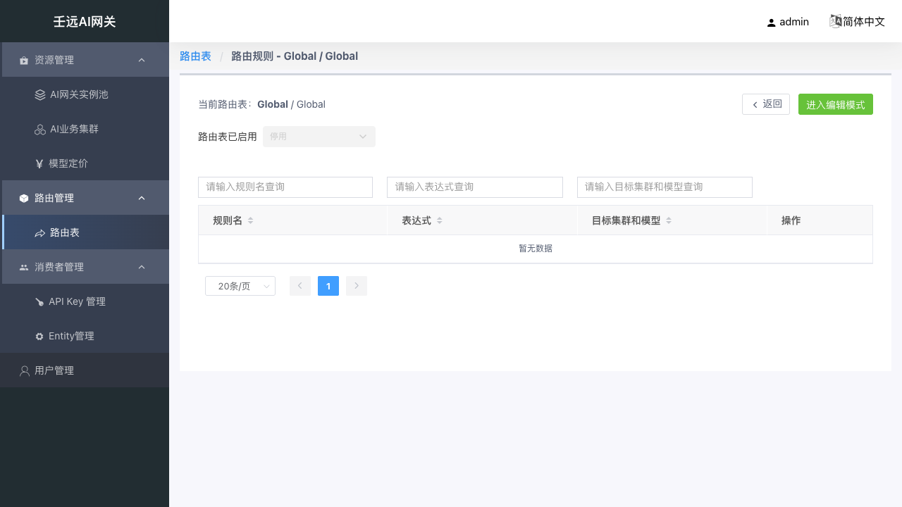
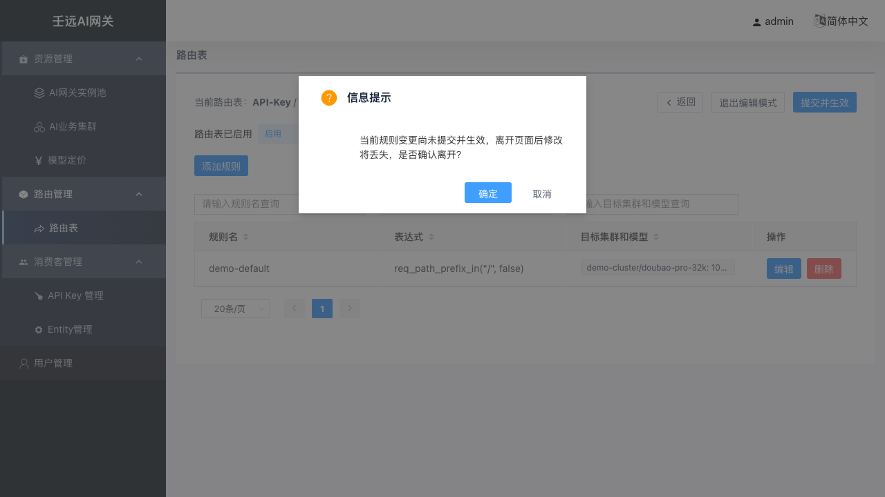

10 路由管理：路由表与路由规则
路由决定「请求按什么规则、以什么比例转发到哪些集群 + 模型」。系统预置三种作用域的路由表：
| 路由表类型 | 作用范围 |
|---|---|
| Global | 全局兜底，未命中 API-Key / Entity 路由表时使用 |
| Entity | 命中指定组织的请求，该组织下所有 Key 共享 |
| API-Key | 命中指定 API-Key 的请求，专属规则互不干扰 |
匹配优先级：API-Key > Entity > Global。
匹配语义：同一路由表内，规则按列表顺序依次匹配表达式，命中第一条即停止，请求按该规则的目标权重转发；全部规则未命中时回落下一优先级路由表 / 走系统默认转发。因此更具体的规则应排在前面。
10.1 路由表列表
进入 路由管理 → 路由表，展示所有路由表列表。

表格列说明：
| 列名 | 说明 |
|---|---|
| 路由表类型 | Global / Entity / API-Key，支持下拉筛选 |
| 路由表属主 | global 显示 global；entity 显示组织名称；apikey 显示 Key ID |
| 状态 | 启用 / 停用，支持下拉筛选 |
| 操作 | 查看、启用 / 停用 |
状态切换：点击「启用」或「停用」按钮可切换路由表状态。路由表停用后该表规则不再生效，流量回落到下一优先级路由表。
自动创建：API-Key 创建后会自动生成属主为该 Key 的 apikey 路由表（见 09 章）。
10.2 路由规则页面
点击路由表行「查看」按钮，进入该路由表的路由规则编辑页面。页面顶部显示当前路由表信息：
- 当前路由表：
类型 / 属主 - 路由表已启用：启用 / 停用 下拉选择
- 操作按钮：返回、进入编辑模式 / 退出编辑模式、提交并生效

编辑模式
规则的新增、编辑、删除需在编辑模式下进行。注意有两个"保存"步骤，缺一不可：
| 步骤 | 操作 | 作用 | 是否影响线上 |
|---|---|---|---|
| 1 | 点击「进入编辑模式」 | 进入可编辑状态 | 不影响 |
| 2 | 添加/编辑/删除规则 | 修改规则内容 | 不影响 |
| 3 | 点击「本地保存」 | 把本条规则暂存到页面列表中 | 仍不影响 |
| 4 | 点击「提交并生效」 | 把所有修改真正下发到网关 | 正式生效 |
⚠️ 关键提醒：只有第 4 步"提交并生效"才会让规则真正生效！如果只点了"本地保存"就离开，修改不会生效，页面会弹出提示。
编辑态的修改未提交前不影响线上流量。提交并生效后自动退出编辑模式。
提交并生效
所有规则编辑完成后，点击顶部「提交并生效」按钮，系统将校验规则并保存，成功后提示「提交成功!」，页面回到查看模式，列表显示最新规则。
提交并生效后，配置通常在数秒到数十秒内同步到数据面（依赖 conf-agent）。若 curl 立即失败，可等待 10～30 秒后重试。
离开确认
规则列表发生变更但尚未提交并生效时，点击「返回」、面包屑或切换其他菜单，会弹出信息提示：「当前规则变更尚未提交并生效，离开页面后修改将丢失，是否确认离开？」。点击「确定」放弃修改离开，点击「取消」回到编辑页继续。

10.3 规则列表
规则列表展示当前路由表下的所有规则，按列表顺序依次匹配。
表格列说明：
| 列名 | 说明 |
|---|---|
| 规则名称 | 规则标识，支持搜索 |
| 表达式 | 匹配条件表达式，支持搜索 |
| 目标集群和模型 | 命中后转发的目标，鼠标悬停可查看完整内容 |
| 操作 | 查看（查看模式）或 编辑/删除（编辑模式） |
10.4 添加 / 编辑规则
编辑模式下点击「添加规则」，或在操作列点击「编辑」，右侧弹出规则抽屉：

表单字段：
| 字段 | 必填 | 默认值 | 格式要求 | 说明 |
|---|---|---|---|---|
| 规则名称 | 是 | 空 | 1-64 字符；仅允许字母、数字、-、_、.；不能以 -、_、. 开头或结尾 | 表内唯一 |
| 表达式 | 是 | 空 | 合法的 BFE 条件表达式 | 构造器点选生成或直接编辑，保存时服务端校验 |
| 目标集群和模型 | 是 | 至少 1 项目标 | 见下方目标说明 | 多个目标时按权重分配 |
| 备用集群和模型 | 否 | 空 | 见下方备用集群说明 | 转发失败时的回落目标；可为空 |
表达式构造器
表达式是什么？ 你可以理解为"条件判断语句"——当请求满足这个条件时，就按本条规则转发。不用手写代码，点击构造器按钮就能自动生成。
表达式为 BFE 条件表达式，构造器按维度提供按钮点选生成，点击后自动插入到表达式文本中。
逻辑连接符：
| 按钮 | 生成符号 |
|---|---|
( | ( |
) | ) |
&& | && |
|| | || |
! | ! |
条件维度与操作符：
| 维度 | 操作符 | 生成表达式示例 |
|---|---|---|
| host | in | req_host_in("www.a.com|www.b.com") |
| port | in | req_port_in("80|8080") |
| method | in | req_method_in("GET") |
| path | in / prefix_in / suffix_in | req_path_prefix_in("/v1/", false) |
| query | exist / key_in / key_prefix_in / value_in / value_prefix_in / value_suffix_in / value_hash_in | req_query_value_in("search", "flower", false) |
| cookie | key_in / value_in / value_prefix_in / value_suffix_in / value_hash_in | req_cookie_value_in("ssp-web-version", "v0", true) |
| header | key_in / value_in / value_prefix_in / value_suffix_in / value_hash_in | req_header_value_in("api_version", "v1|v2", true) |
| clientIP | range / trusted / hash_in | req_cip_range("1.1.1.1", "2.2.2.2") |
| proto | secure | req_proto_secure() |
| system | bfe_time_range / bfe_cluster_in | bfe_time_range("20190204203000H", "20190204204500H") |
| body | req_body_json_in | req_body_json_in("level1.level2.level3", "pat1|pat2", false) |
| body | req_body_json_prefix_in | req_body_json_prefix_in("level1.level2", "prefix1|prefix2", false) |
参数说明：表达式末尾的
true或false表示"是否忽略大小写"。
true= 忽略大小写（推荐，更灵活）false= 区分大小写（严格匹配）记忆技巧：
true就是"是的，我要忽略大小写"。
最简配置：兜底规则
如果你只想让所有请求都走同一个集群，不需要复杂表达式：
- 在构造器中点击
path行的prefix_in - 参数填
/ - 得到表达式：
req_path_prefix_in("/", false)
这表示"匹配所有以 / 开头的请求"，也就是所有请求。这是最常见的兜底规则。
常用场景示例：
| 场景 | 表达式示例 |
|---|---|
| 兜底匹配所有请求 | req_path_prefix_in("/", false)（或 default_t()） |
| 按路径前缀分流 | req_path_prefix_in("/v1/", false) |
| 按 Header + 方法分流 | req_header_value_in("api_version", "v1|v2", true) && req_method_in("POST") |
| 按查询参数灰度 | req_query_value_in("gray", "1", false) |
目标与权重

每个目标包含以下字段：
| 字段 | 必填 | 默认值 | 说明 |
|---|---|---|---|
| 集群 | 是 | 空 | 下拉选择已创建的业务集群 |
| 模型 | 否 | 空 | 下拉选择该集群下的模型；留空表示透传请求中的模型名 |
| 权重 | 是 | 0 | 0-100 的整数；多目标时流量分配比例，所有目标权重之和必须等于 100 |
| 操作 | — | — | 删除该目标 |
- 指定模型：无论 curl 里写什么 model，都转发到该模型（适合统一出口）。指定模型是目标模型解析的第一步（其后依次为集群「裁剪前缀」、「模型重定向」），API-Key 的允许/禁止模型按最终解析出的目标模型判定。
- 留空：使用 curl 请求体中的 model 字段（适合客户端自选模型；需与后端实际模型名一致）。
点击「+ 添加目标」增加目标行。规则至少需要保留 1 项目标。
备用集群
除正常目标外，还可配置 fallbacks（备用集群）。当请求按正常目标转发失败时，可回落到备用集群继续尝试。
备用集群字段与目标集群类似，但不含权重：
| 字段 | 必填 | 默认值 | 说明 |
|---|---|---|---|
| 集群 | 是 | 空 | 下拉选择已创建的业务集群 |
| 模型 | 否 | 空 | 下拉选择该集群下的模型；留空表示透传请求中的模型名 |
| 操作 | — | — | 删除该备用集群 |
- 点击「+ 添加备用」增加行；备用集群列表可为空。
- 同一规则内，备用集群之间、备用集群与目标集群之间的 「集群 + 模型」组合均不能重复。
查看规则
非编辑模式下点击规则行「查看」按钮，或在操作列点击「查看」，右侧弹出只读抽屉，展示规则名称、表达式、目标集群和模型。
保存规则
规则抽屉底部有两个按钮：
- 本地保存：校验规则名称、表达式、目标权重和重复性，校验通过后保存到规则列表
- 重置：清空当前规则内容，恢复到打开抽屉前的状态
10.5 校验规则
保存和提交时系统会进行以下校验：
- 同一规则内目标权重之和必须等于 100
- 同一规则内目标集群 + 模型组合不能重复
- 同一规则内备用集群 + 模型组合不能重复，且不能与目标集群组合重复
- 同一规则表内规则名称不能重复
- 表达式语法错误会在保存时提示
- 规则至少包含 1 项目标
10.6 注意事项
- 修改规则后需「提交并生效」才会下发到数据面生效。
- 停用路由表前请确认回落路径可用，避免流量中断。
- 路由表停用或表达式不匹配时，请求回落下一优先级路由表（API-Key > Entity > Global）。
- 同一路由表内规则按列表顺序匹配，命中第一条即停止，更具体的规则应排在前面。
- 目标模型留空表示透传请求中的模型名，请求会携带原始模型名称转发到目标集群。
- 路由表列表和规则列表均支持搜索和排序。